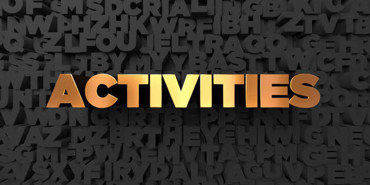

Home
|

Education
|

Work Experience
|

Skills
|

Activities
|

About Me
|

co-curricular activities
|
- Organize movie night for student in Kampus Samarahan 2.
- Deputy of the Malaysian Red Cresrecent Society in secondary school.
- Active in all faculty activities such as attend talk or webinar that organized by faculty.
- Managing the events organized at the Masjid Lebai Mat Kampung Emplam.
- Volunteers help clean the beach at Pantai Tanjung Kembang, Kabong.
- Provided tutoring in history subject to fellow students struggling with that subject in a Peer Tutoring Program at my secondary school.
|
|
This website may contain confidential information and intendend for the recipient specified in message only.
|